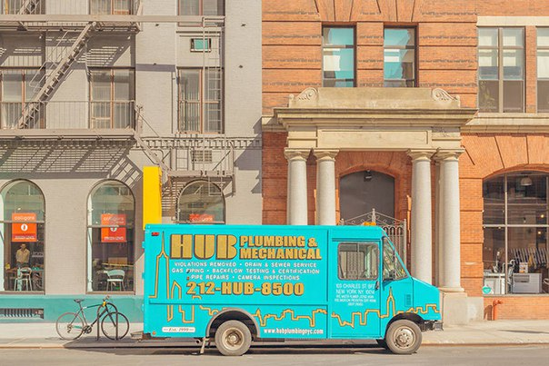

Vanessa Dutton on jul 01, 2016 CSS Keyframe Animation with Delay Between Iterations Say you want an animation to run for 1 second, but then delay for 4 seconds before running again. Seems like that would be easy. Turns out it's not-so-straightforward, but doable. You need to fake it. KW: CSS Read more...
Vanessa Dutton on jul 02, 2016 CSS Keyframe Animation with Delay Between Iterations Say you want an animation to run for 1 second, but then delay for 4 seconds before running again. Seems like that would be easy. Turns out it's not-so-straightforward, but doable. You need to fake it. KW: HTML Read more...
Vanessa Dutton on jul 03, 2016 CSS Keyframe Animation with Delay Between Iterations Say you want an animation to run for 1 second, but then delay for 4 seconds before running again. Seems like that would be easy. Turns out it's not-so-straightforward, but doable. You need to fake it. KW: Grid Read more...
Vanessa Dutton on jul 04, 2016 CSS Keyframe Animation with Delay Between Iterations Say you want an animation to run for 1 second, but then delay for 4 seconds before running again. Seems like that would be easy. Turns out it's not-so-straightforward, but doable. You need to fake it. KW: JS JQ Read more...
Vanessa Dutton on jul 05, 2016 CSS Keyframe Animation with Delay Between Iterations Say you want an animation to run for 1 second, but then delay for 4 seconds before running again. Seems like that would be easy. Turns out it's not-so-straightforward, but doable. You need to fake it. KW: LESS SASS Read more...
Vanessa Dutton on jul 08, 2016 CSS Keyframe Animation with Delay Between Iterations Say you want an animation to run for 1 second, but then delay for 4 seconds before running again. Seems like that would be easy. Turns out it's not-so-straightforward, but doable. You need to fake it. KW: JQ Read more...
Vanessa Dutton on jul 17, 2016 CSS Keyframe Animation with Delay Between Iterations Say you want an animation to run for 1 second, but then delay for 4 seconds before running again. Seems like that would be easy. Turns out it's not-so-straightforward, but doable. You need to fake it. KW: CSS HTML Read more...
Vanessa Dutton on jul 23, 2016 CSS Keyframe Animation with Delay Between Iterations Say you want an animation to run for 1 second, but then delay for 4 seconds before running again. Seems like that would be easy. Turns out it's not-so-straightforward, but doable. You need to fake it. KW: UX UI Read more...
 Vanessa Dutton on aug 01, 2016 CSS Keyframe Animation with Delay Between Iterations Say you want an animation to run for 1 second, but then delay for 4 seconds before running again. Seems like that would be easy. Turns out it's not-so-straightforward, but doable. You need to fake it. KW: Foundation Read more...